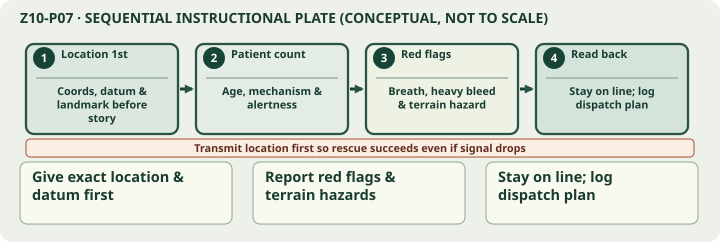

Z10-P07 · Wilderness medicine · New manuscript
Deliver clear medical location and status reports to 911 or SAR dispatch
Transmit concise, actionable patient and terrain facts so dispatchers launch the right ground or air resources immediately.
When it applies · Any outdoor or remote medical emergency where phone, radio, or satellite contact can be established.
Equipment · Written patient log, map/GPS coordinate format with datum, and communication device.

Actions
- State your exact location first (coordinates with format and datum, trailhead, or prominent landmark) so dispatch can still locate you if the signal drops mid-call.[T02, T06, N11]
- Report the number of patients, age/sex if known, mechanism of injury, current responsiveness, breathing status, severe bleeding, and immediate weather or terrain hazards.[T02, M20]
- Stay on the line until the dispatcher hangs up, follow all telephone care prompts, and confirm whether your party must stay put or move to a named access point.[T02, T06]
Failure recognition · Spending two minutes telling the story of the hike before giving coordinates, then losing cell signal with no location transmitted.[T02, T06]
Verify · Confirm dispatch read back your coordinates/landmark, patient red flags, and next check-in time or channel.[T06, N11, ED]
Stop or change course · If cellular or radio contact fails completely at the scene, keep one caregiver with the patient and send a paired runner with the written report only if terrain is safe.[T06, E11, M20]
Evidence and editorial notes
- E11 · NPS · Hike Smart (current web edition)
- Section: Plan your hike; Stay together · Conditions: Groups on hiking routes
Support: Choose a route suited to the group's abilities and hike at a pace that keeps the group together.
Limitations: Fast hikers moving ahead at junctions is a leading driver of preventable separation. · Conflicting evidence: None; aligns with SAR prevention principles.
Editorial note: Core reference for group accountability and pacing cards. · Specialist reviewer: Group leaders and search and rescue
Primary source · checked 2026-11-24 - M20 · NIH / MedlinePlus · First Aid Overview (current web edition)
- Section: Lay First-Aid Scope, Kit Readiness, and Documentation · Conditions: Pre-trip kit preparation and remote patient monitoring
Support: Maintain an inspected, unexpired first-aid kit matched to your actual training, keep written patient observations (time, responsiveness, breathing, symptoms, interventions) for EMS handoff, and practice skills in certified courses.
Limitations: Carrying advanced medical instruments without clinical training adds risk rather than capability. · Conflicting evidence: None; aligns with ARC and NPS-K.
Editorial note: Anchors kit sizing, SOAP-style lay observation logs, and scope-of-practice cards. · Specialist reviewer: Wilderness EMS and clinical education
Primary source · checked 2026-11-24 - N11 · USGS · US Topo Maps for America (current web edition)
- Section: US Topo map metadata; map collar · Conditions: Consumer map and receiver; exact horizontal datum and coordinate format
Support: Check the horizontal reference and coordinate format before plotting. Do not assume mixed datums identify the same point.
Limitations: Datum transformation is location- and frame-dependent; use authoritative conversion. · Conflicting evidence: See A01 cross-zone review.
Editorial note: Use only within the stated conditions. · Specialist reviewer: Cartography and dispatch
Primary source · checked 2026-11-24 - T02 · American Red Cross · First Aid Steps (current web edition)
- Section: First Aid Steps > Call 9-1-1 · Conditions: Lay emergency response to unresponsiveness, abnormal breathing or severe bleeding
Support: Activate EMS and get needed equipment. Follow dispatcher directions and act within training.
Limitations: Remote locations may delay EMS arrival, requiring sustained stabilization after activation. · Conflicting evidence: None; aligns with NPS-E.
Editorial note: Mandates early emergency activation and dispatcher adherence. · Specialist reviewer: EMS and wilderness medicine
Primary source · checked 2026-11-24 - T06 · NPS · Outdoor Emergency Plan (current web edition)
- Section: If you get lost or hurt; call for help · Conditions: Outdoor US emergency
Support: Communicate location, last known point, situation and needs. Stay put when unable to establish a safe route unless immediate danger requires movement.
Limitations: Cell signal is unreliable in backcountry terrain; pre-trip plans bridge communication gaps. · Conflicting evidence: None; core lost-person decision rule.
Editorial note: Foundation for stay/signal/move and dispatch handoff cards. · Specialist reviewer: Search and rescue
Primary source · checked 2026-11-24
Source lineage · NPS Emergency Plan and American Red Cross; new manuscript · Classification · New manuscript.